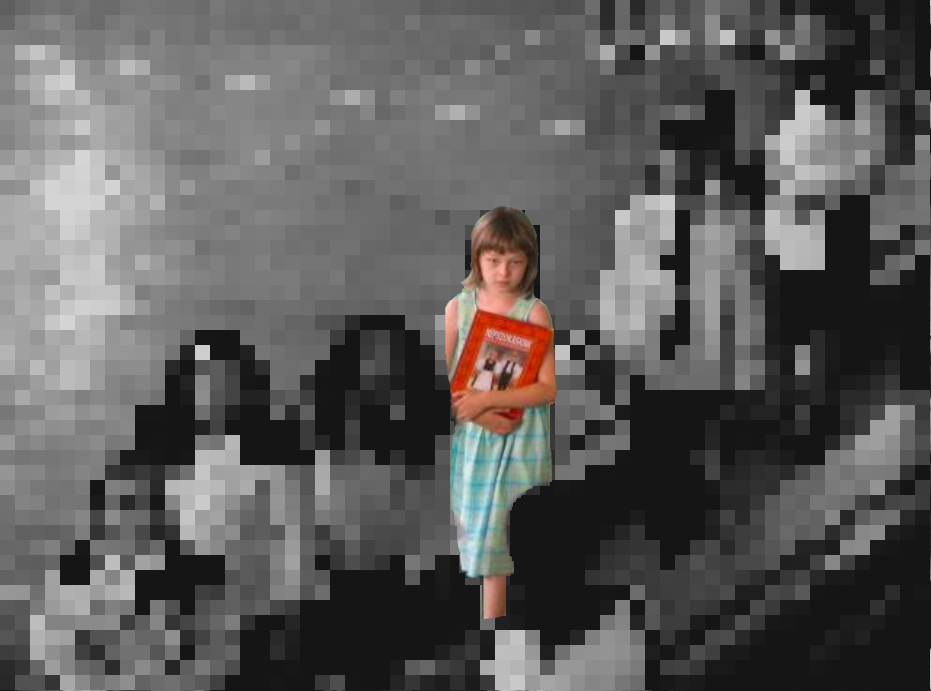

Those Living Abroad, What Highball and Lowball mean in Context
There are a range of estimates when it comes to population. Considering several sources, the highball and lowball esitmate were determined.
A recent article explains just how many Hungarian children grow up outside of Hungary. Growing up, I only knew of a few children like my siblings and I. We had two Hungarian national parents, but we struggled to be recognized as truly Hungarian.We were too Hungarian to be American, too American to be Hungarian.
They call that feeling being just an average "third culture kid". Interestingly enough, my siblings and I each made our own decision in terms of what culture we idenitfy with most (and no, in case you were wondering, we didn't all select the same one).
 These photos were taken the same year as I completed two primary school educations simultaneously.
By the end of my Primary school career in both countries, my teachers in Hungary commented how many more students had begun doing what my sister and I had done our entire lives, the Two-School System.
It is most likely due to my grueling eight year double school experience that I get so offended when I am dismissed as not Hungarian by Hungarians living in Hungary.
It is as if, you cease to be counted as a member of an ethnic group if you don't live within tight national boundaries.
Sources:Romania sourceAustria sourceSlovakia sourceUkraine Source Serbia sourceCroatia sourceSlovenia sourceUnited States sourceCanada sourceIsrael sourceGermany sourceGermany sourceFranceRussia sourceBrazil sourceAustralia sourceUnited Kingdom sourceUnited Kingdom sourceChile sourceArgentina sourceFinland sourceNew Zealand sourceSweden sourceSwitzerland sourceTurkey sourceMexico sourceIreland sourcePoland sourceNew Zealand sourceNorway sourceDenmark source